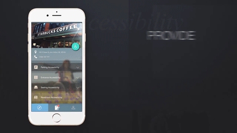
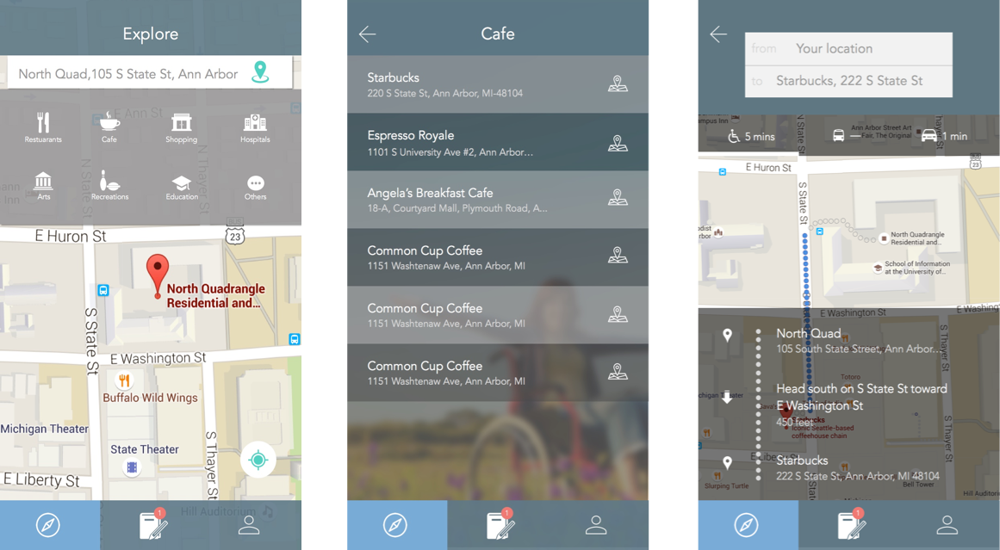
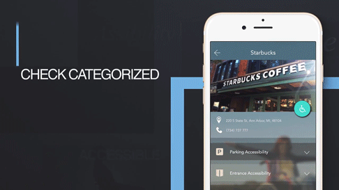
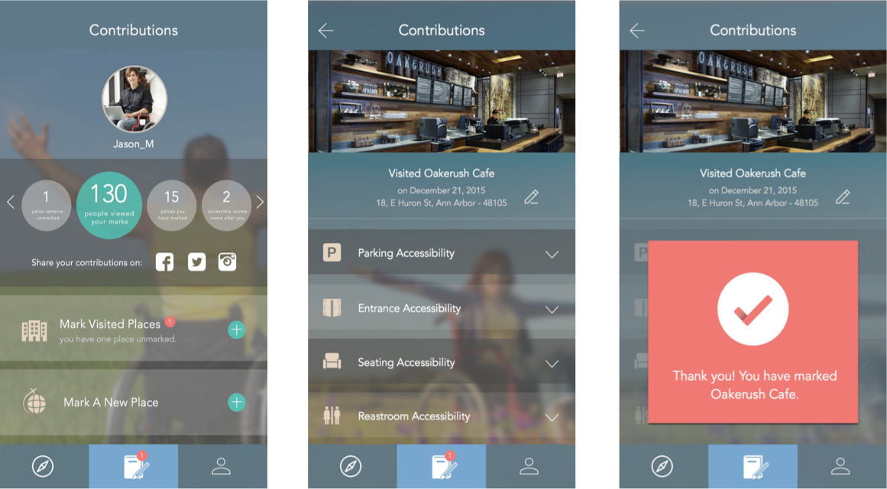
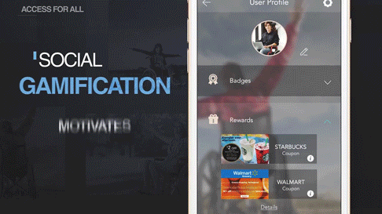
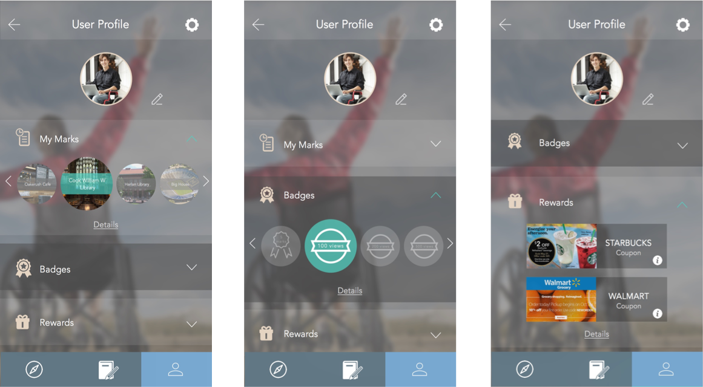

A mobile application for wheelchair users
Access is a mobile application, through which wheelchair users can discover
the accessibility information around them and connect to their communities in new ways.
Awards: this project won the 1st prize Civic Tech Award, expoSItion 2016 at University of Michiganthis. Besides, it was selected into the final rounds of two of the biggest human-computer interaction design competitions (CHI and SEGD).
In this project, I served as both UX designer and product manager.

To reveal and uncover the real needs of wheelchair users for attaining accessible information, we have conducted a three month user research, including 98 papers review, 5 contextual inquiries and survey data from 90 respondents. Additionally, we interviewed 20 individuals in the age group of 20 to 40 years old.
Our goal was to identify the following: a. Whether public spaces and businesses lacked facilities for people with disabilities. b. Whether people are willing to contribute information to the application. c. What problems they face generally while traveling around the city. d. Their cellphone usage statistics. e. If these results were different from the Mturk survey.

An accessibility information map with navigation system exclusively for wheelchair users, through which users can find an accessible route.
 Accessibility information was categorized in Parking, Entrance, Seating and Restroom accessibility information, endorsed by other users.
 An Incentive mechanism to engage people contributing accessibility information with a combination of both virtual and real-world incentive.
 We brainstormed several ideas based on the user research for deciding the main features of the application. We wanted to incorporate the community in updating the information for the application. Our respondents were a part of the research process at every stage.
We made sketches and mid-fi prototypes to better understand the flow of the application. Our target users then tested these paper prototypes and provided useful feedback. We iterated on our prototype based on feedback from user tests and came up with hi-fi prototypes.

{kind=link}
{kind=link}
{kind=link}
{kind=link}
{kind=link}